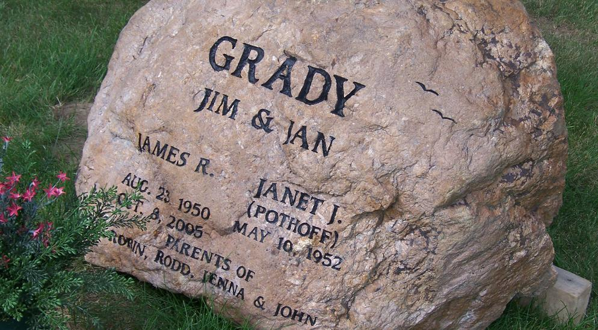

Cremation Memorials
Cremation memorials can vary depending on personal tastes, how many grave spaces your family owns, how many names will go on the memorial, and whether cremains are scattered, buried, or interred actually in the monument.

Remembering a life
Memorialization is a permanent record and celebration of a life, and of those who loved that life.
These are some of the many organizations that we work with that you may put a memorial paver at:
Whether you consider a traditional cemetery memorial or cremation, there are many options to permanently remember and memorialize someone. Memorialization is a permanent record and celebration of a life, and of those who loved that life. The practice of choosing cremation as an alternative to the traditional internment has not changed the public’s desire to remember and honor life. This desire is still as strong as ever. Even with the cremation ashes scattered from the tops of mountains or in the sea, the family still needs to memorialize a life that was lived, to tangibly show their love and have a focal grieving point. Whether it be a granite bench at a golf course, a sculpture in a park or a rustic boulder by a river or lake, unique cremation memorials can fulfill our desire to remember.
Cremation memorials can vary depending on personal tastes, how many grave spaces your family owns, how many names will go on the memorial, and whether cremains are scattered, buried, or interred actually in the monument.
Cremation memorials are so much more today. They can be an: